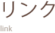

TOP < リンク

| URL | http://www.osakaysc.jp/ |
|---|---|
| TEL | 06-123-4567 |
| 所在地 |
〒530-0000 大阪市北区大阪町1-2 |
| URL | http://www.hyogoysc.jp/ |
|---|---|
| TEL | 078-123-4567 |
| 所在地 |
〒651-0000 神戸市中央区神戸町1-2 |
| URL | http://www.kyotoysc.jp/ |
|---|---|
| TEL | 075-123-4567 |
| 所在地 |
〒604-0000 京都市北区京都町1-2 |
| URL | http://www.naraysc.jp/ |
|---|---|
| TEL | 0742-123-4567 |
| 所在地 |
〒630-0000 奈良市奈良町1-2 |